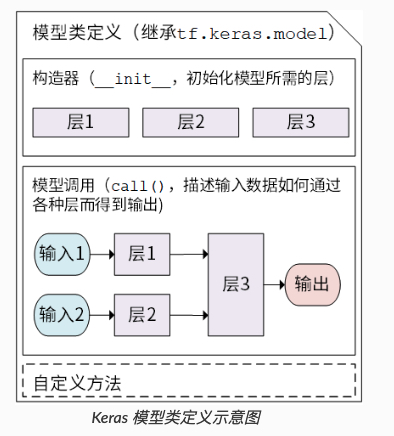
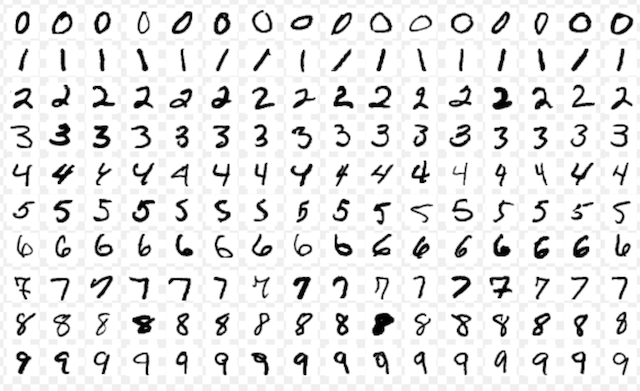

4.3 TensorFlow快速入门模型¶
学习目标¶
- 目标
- 模型的构建：
tf.keras.Model和tf.keras.layers - 模型的损失函数：
tf.keras.losses - 模型的优化器：
tf.keras.optimizer - 模型的评估：
tf.keras.metrics - 应用
- 无
4.3.1 模型构建-Model与Layer¶
在 TensorFlow 中，推荐使用 Keras（ tf.keras）构建模型。Keras 是一个广为流行的高级神经网络 API，简单、快速而不失灵活性，现已得到 TensorFlow 的官方内置和全面支持。
Keras 有两个重要的概念： 模型（Model） 和 层（Layer） 。
- 层将各种计算流程和变量进行了封装（例如基本的全连接层，CNN 的卷积层、池化层等）
- Keras 在tf.keras.layers下内置了深度学习中大量常用的的预定义层，同时也允许我们自定义层。
- 模型则将各种层进行组织和连接，并封装成一个整体，描述了如何将输入数据通过各种层以及运算而得到输出。在需要模型调用的时候，使用y_pred = model(X)的形式即可。
Keras 模型以类的形式呈现，我们可以通过继承 tf.keras.Model这个 Python 类来定义自己的模型。在继承类中，我们需要重写 __init__() （构造函数，初始化）和 call(input) （模型调用）两个方法，同时也可以根据需要增加自定义的方法。
class MyModel(tf.keras.Model):
def __init__(self):
super().__init__()
# 此处添加初始化代码（包含 call 方法中会用到的层），例如
# layer1 = tf.keras.layers.BuiltInLayer(...)
# layer2 = MyCustomLayer(...)
def call(self, input):
# 此处添加模型调用的代码（处理输入并返回输出），例如
# x = layer1(input)
# output = layer2(x)
return output
# 还可以添加自定义的方法

继承 tf.keras.Model 后，我们同时可以使用父类的若干方法和属性，例如在实例化类 model = Model() 后，可以通过 model.variables 这一属性直接获得模型中的所有变量，免去我们一个个显式指定变量的麻烦。
4.3.1.1 案例：使用Model构建模型¶
对于上面的 y_pred = w * X + b ，我们可以通过模型类的方式编写如下：
import tensorflow as tf
X = tf.constant([[1.0, 2.0, 3.0], [4.0, 5.0, 6.0]])
y = tf.constant([[10.0], [20.0]])
# 1、构建线性模型
class Linear(tf.keras.Model):
def __init__(self):
super().__init__()
self.dense = tf.keras.layers.Dense(
units=1,
activation=None,
kernel_initializer=tf.zeros_initializer(),
bias_initializer=tf.zeros_initializer()
)
def call(self, input):
output = self.dense(input)
return output
# 以下代码结构与前节类似
model = Linear()
optimizer = tf.keras.optimizers.SGD(learning_rate=0.01)
for i in range(100):
with tf.GradientTape() as tape:
y_pred = model(X)
loss = tf.reduce_mean(tf.square(y_pred - y))
# 使用 model.variables 这一属性直接获得模型中的所有变量
grads = tape.gradient(loss, model.variables)
optimizer.apply_gradients(grads_and_vars=zip(grads, model.variables))
print(model.variables)
这里，我们没有显式地声明a 和 b 两个变量并写出 y_pred = w x X + b 这一线性变换，而是建立了一个继承了 tf.keras.Model 的模型类 Linear 。这个类在初始化部分实例化了一个 全连接层 （ tf.keras.layers.Dense ），并在 call 方法中对这个层进行调用，实现了线性变换的计算。
4.3.1.1 Keras 当中的layer(层)接口¶
在 Keras 中，您可以通过组合层来构建模型。模型（通常）是由层构成的图。最常见的模型类型是层的堆叠，keras.layers中就有很多模型
from tensorflow.python.keras.layers import Dense
from tensorflow.python.keras.layers import DepthwiseConv2D
from tensorflow.python.keras.layers import Dot
from tensorflow.python.keras.layers import Dropout
from tensorflow.python.keras.layers import ELU
from tensorflow.python.keras.layers import Embedding
from tensorflow.python.keras.layers import Flatten
from tensorflow.python.keras.layers import GRU
from tensorflow.python.keras.layers import GRUCell
from tensorflow.python.keras.layers import LSTMCell
Dense:添加一层神经元
- Dense(units,activation=None,**kwargs)
- units:神经元个数
- activation：激活函数,参考tf.nn.relu,tf.nn.softmax,tf.nn.sigmoid,tf.nn.tanh
- **kwargs:输入上层输入的形状，input_shape=()
4.3.1.2 Models¶
Model(inputs=a, outputs=b)
- inputs:定义模型的输入,Input类型
- outpts:定义模型的输出
- def call(self, inputs):接收来自上层的输入
Models属性
model.layers：获取模型结构列表
print(model.layers)
[<tensorflow.python.keras.layers.core.Flatten object at 0x10864a780>, <tensorflow.python.keras.layers.core.Dense object at 0x10f95b128>, <tensorflow.python.keras.layers.core.Dense object at 0x125bd6fd0>, <tensorflow.python.keras.layers.core.Dense object at 0x125bf9240>]
model.inputs是模型的输入张量列表
print(model.inputs)
[<tf.Tensor 'flatten_input:0' shape=(?, 28, 28) dtype=float32>]
model.outputs是模型的输出张量列表
print(model.outputs)
[<tf.Tensor 'dense_2/Softmax:0' shape=(?, 10) dtype=float32>]
model.summary()打印模型的摘要表示
Layer (type) Output Shape Param #
=================================================================
flatten (Flatten) (None, 784) 0
_________________________________________________________________
dense (Dense) (None, 64) 50240
_________________________________________________________________
dense_1 (Dense) (None, 128) 8320
_________________________________________________________________
dense_2 (Dense) (None, 10) 1290
=================================================================
Total params: 59,850
Trainable params: 59,850
Non-trainable params: 0
4.3.2 案例：多层感知机（MLP）识别Mnist手写数字¶
一个最简单的多层感知机（Multilayer Perceptron, MLP），或者说 “多层全连接神经网络” 开始，介绍 TensorFlow 的模型编写方式。

-
目的：我们使用多层感知机完成 MNIST 手写体数字图片数据集的分类任务
-
步骤：
- 1、使用
tf.keras.datasets获得数据集并预处理 - 2、使用
tf.keras.Model和tf.keras.layers构建模型 - 3、构建模型训练流程，使用
tf.keras.losses计算损失函数，并使用tf.keras.optimizer优化模型 - 4、构建模型评估流程，使用
tf.keras.metrics计算评估指标
1、数据获取及预处理： tf.keras.datasets¶
先进行预备工作，实现一个简单的 MNISTLoader 类来读取 MNIST 数据集数据。这里使用了 tf.keras.datasets 快速载入 MNIST 数据集。
import tensorflow as tf
import numpy as np
class MNISTLoader(object):
"""数据加载处理类
"""
def __init__(self):
"""
"""
# 1、获取数据
(self.train_data, self.train_label), (self.test_data, self.test_label) = tf.keras.datasets.mnist.load_data()
# 2、处理数据，归一化，维度以及类型
# MNIST中的图像默认为uint8（0-255的数字）。以下代码将其归一化到0-1之间的浮点数，并在最后增加一维作为颜色通道
# 默认下载是(60000, 28, 28)，扩展到四维方便计算理解[60000, 28, 28, 1]
self.train_data = np.expand_dims(self.train_data.astype(np.float32) / 255.0, axis=-1)
# [10000, 28, 28, 1]
self.test_data = np.expand_dims(self.test_data.astype(np.float32) / 255.0, axis=-1)
self.train_label = self.train_label.astype(np.int32) # [60000]
self.test_label = self.test_label.astype(np.int32) # [10000]
# 获取数据的大小
self.num_train_data, self.num_test_data = self.train_data.shape[0], self.test_data.shape[0]
def get_batch(self, batch_size):
"""
随机获取获取批次数据
:param batch_size: 批次大小
:return:
"""
# 从数据集中随机取出batch_size个元素并返回
index = np.random.randint(0, np.shape(self.train_data)[0], batch_size)
return self.train_data[index, :], self.train_label[index]
if __name__ == '__main__':
mnist = MNISTLoader()
train_data, train_label = mnist.get_batch(50)
print(train_data.shape, train_label)
注：在 TensorFlow 中，图像数据集的一种典型表示是 [图像数目，长，宽，色彩通道数]的四维张量。
2、模型的构建：tf.keras.Model 和 tf.keras.layers¶
多层感知机的模型类实现与上面的线性模型类似，使用 tf.keras.Model 和 tf.keras.layers 构建，引入了非线性激活函数（这里使用了 ReLU 函数 ， 即下方的 activation=tf.nn.relu ），模型输出 10 维的向量，分别代表这张图片属于 0 到 9 的概率。
- 为了使得模型的输出能始终满足这两个条件，我们使用 Softmax 函数 （归一化指数函数， tf.nn.softmax ）对模型的原始输出进行归一化。
class MLP(tf.keras.Model):
"""自定义MLP类
"""
def __init__(self):
super().__init__()
# 定义两层神经网络，第一层100个神经元，激活函数relu，第二层10个神经元输出给softmax
self.flatten = tf.keras.layers.Flatten()
self.dense1 = tf.keras.layers.Dense(units=100, activation=tf.nn.relu)
self.dense2 = tf.keras.layers.Dense(units=10)
def call(self, inputs):
# [batch_size, 28, 28, 1]
x = self.flatten(inputs)
# [batch_size, 784]
x = self.dense1(x)
# [batch_size, 100]
x = self.dense2(x)
# [batch_size, 10]
output = tf.nn.softmax(x)
return output
3、模型的训练： tf.keras.losses 和 tf.keras.optimizer¶
定义一些模型超参数：
num_epochs = 5
batch_size = 50
learning_rate = 0.001
然后迭代进行以下步骤：
-
1、从 DataLoader 中随机取一批训练数据；
-
2、将这批数据送入模型，计算出模型的预测值；
-
3、将模型预测值与真实值进行比较，计算损失函数（loss）。这里使用 tf.keras.losses 中的交叉熵函数作为损失函数；
-
4、计算损失函数关于模型变量的导数；
-
5、将求出的导数值传入优化器，使用优化器的 apply_gradients 方法更新模型参数以最小化损失函数（优化器的详细使用方法见 前章 ）。
具体代码实现
# 实例化模型和数据读取类，并实例化一个优化器，这里使用 Adam 优化器
model = MLP()
data_loader = MNISTLoader()
optimizer = tf.keras.optimizers.Adam(learning_rate=learning_rate)
# 计算出大概需要迭代批次大小
num_batches = int(data_loader.num_train_data // batch_size * num_epochs)
# 进行批次数据获取
for batch_index in range(num_batches):
X, y = data_loader.get_batch(batch_size)
with tf.GradientTape() as tape:
y_pred = model(X)
# 使用tf.keras.losses计算损失
loss = tf.keras.losses.sparse_categorical_crossentropy(y_true=y, y_pred=y_pred)
# 求出平均损失
loss = tf.reduce_mean(loss)
print("batch %d: loss %f" % (batch_index, loss.numpy()))
grads = tape.gradient(loss, model.variables)
optimizer.apply_gradients(grads_and_vars=zip(grads, model.variables))
注：在 tf.keras中，有两个交叉熵相关的损失函数 tf.keras.losses.categorical_crossentropy 和 tf.keras.losses.sparse_categorical_crossentropy 。其中 sparse 的含义是，真实的标签值 y_true可以直接传入 int 类型的标签类别。具体而言：
loss = tf.keras.losses.sparse_categorical_crossentropy(y_true=y, y_pred=y_pred)与
loss = tf.keras.losses.categorical_crossentropy( y_true=tf.one_hot(y, depth=tf.shape(y_pred)[-1]), y_pred=y_pred )的结果相同。
4、模型的评估： tf.keras.metrics¶
最后，我们使用测试集评估模型的性能。这里，我们使用 tf.keras.metrics 中的 SparseCategoricalAccuracy 评估器来评估模型在测试集上的性能。
- 迭代测试数据集，每次通过 update_state() 方法向评估器输入两个参数： y_pred 和 y_true ，即模型预测出的结果和真实结果。
- 使用 result() 方法输出最终的评估指标值（预测正确的样本数占总样本数的比例）。
在以下代码中，我们实例化了一个 tf.keras.metrics.SparseCategoricalAccuracy 评估器，并使用 For 循环迭代分批次传入了测试集数据的预测结果与真实结果，并输出训练后的模型在测试数据集上的准确率。
y_pred = model.predict(data_loader.test_data)
# 定义评估函数
sparse_categorical_accuracy = tf.keras.metrics.SparseCategoricalAccuracy()
# 定义测试数据集一共批次的大小
sparse_categorical_accuracy.update_state(y_true=data_loader.test_label, y_pred=y_pred)
print("测试准确率: %f" % sparse_categorical_accuracy.result())
输出结果:
测试准确率: 0.972300
4.3.5 总结¶
- 模型的构建：
tf.keras.Model和tf.keras.layers - 模型的损失函数：
tf.keras.losses - 模型的优化器：
tf.keras.optimizer - 模型的评估：
tf.keras.metrics